Estos son los materiales que hemos usado para hacer la maquina.
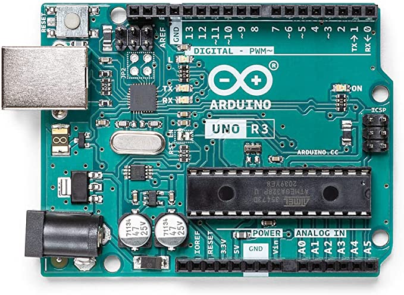
Arduino Uno
Esto es un mini controlador, sirve para controlar los dispositivos por codigo.
Ver Amazon
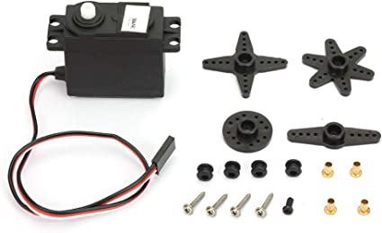
Servo motores 360º
Estos servo motores de 360º nos han servido para hacer que el articulo seleccionado por el usuario sea
posible entregarlo.
Ver Amazon
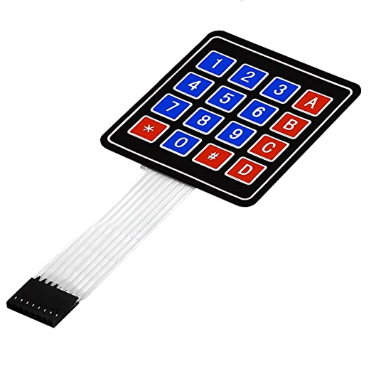
Keypad 4x4
Este keypad 4x4 nos has servido para seleccionar la opcion que quiere el usuario, ingresar
codigos/contraseña, seleccionar usuarios etc.
Ver Amazon
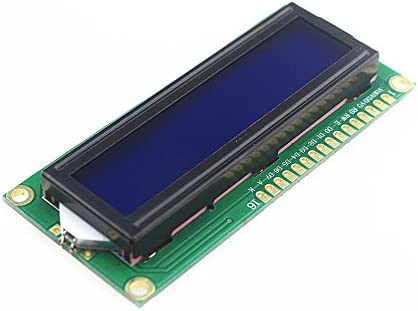
LCD 16x2
El LCD es una pantalla que en nuestra maquina sirve para que el usuario vea que opciones tiene para
seleccionar.
Ver Amazon
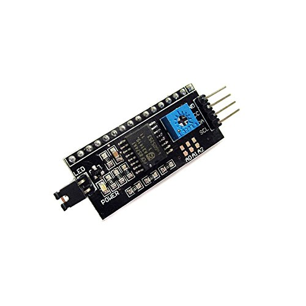
I2C Display LCD
Es un complemento para el componente LCD que sirve para hacer las conexiones con menos cables y mas
fácil.
Ver Amazon
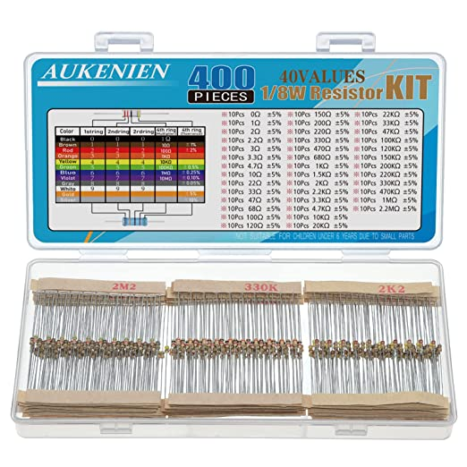
Resistencias
Las resistencias nos sirven para el LCD.
Ver Amazon
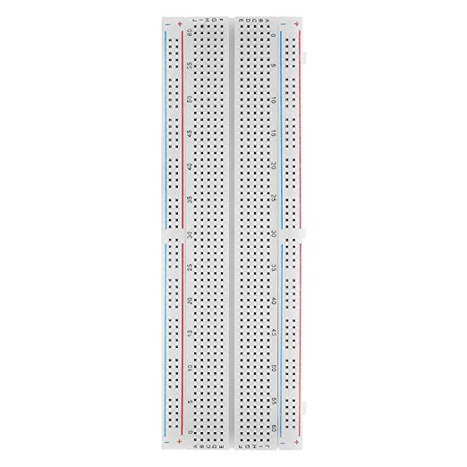
Protoboard
El protoboard sirve para sacar mas pines con solamente un pin.
Ver Amazon
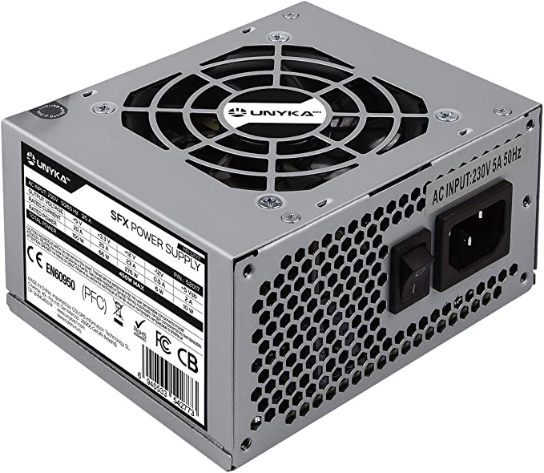
Fuente de Alimentación
Esta Fuente de Alimentacion ha servido para alimentar a todos los componentes de la maquina.
Ver Amazon
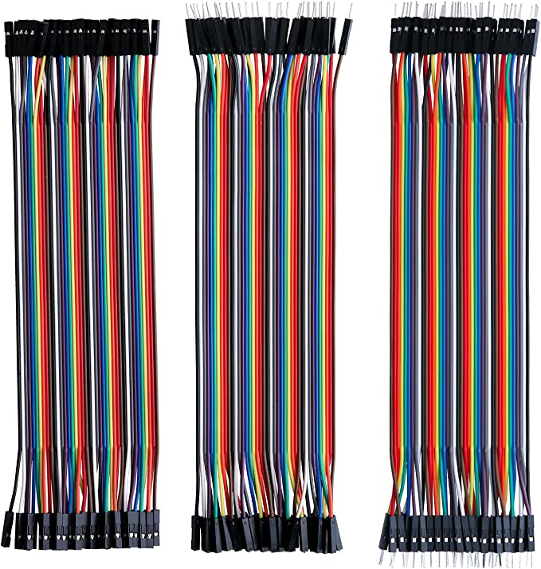
Cables
Cables para conectar los componentes al controlador.
Ver Amazon
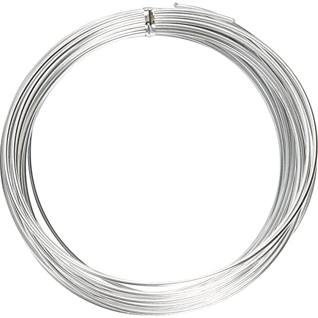
Alambre
El alambre es para los servo motores para empujar el articulo
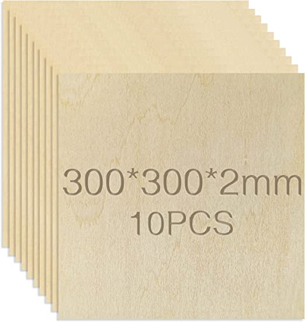
Estructura
Este es el material que hemos hecho la estructura de la maquina
Ver Amazon
Estas son las herramientas que hemos utilizado.
Estos son todos los materiales y herramientas que hemos necesitado para construir la maquina.